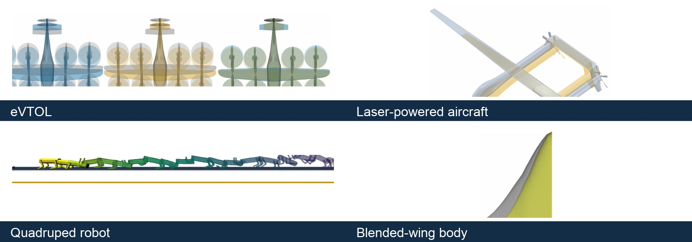

Methods
Fast, differentiable geometry parameterization
- Context
- Multidisciplinary shape optimization varies component dimensions and positions subject to prescribed geometric relationships.
- Gap
- Explicit geometry queries can require iterative searches, which becomes costly as component count and geometric complexity grow.
- Research goal
- Develop differentiable geometry maps that remain efficient as component count and geometric complexity increase.
Selected studies
ReferencesPreserving component relationships as geometry changes
An implicit optimization problem maps geometric design variables to internal deformation states while enforcing geometric equality and inequality constraints. The hierarchical parameterization in lsdo_geo combines existing deformation methods; aircraft and robot examples demonstrate how configuration-specific dimensions and component relationships can be imposed.
Primary paper
Andrew H. Fletcher, John T. Hwang. Implicit Nonlinear Geometry Parameterization for Multidisciplinary Design Optimization. ASME IDETC/CIE 2026 · DETC2026-192508, 2026.



References
- Andrew H. Fletcher, John T. Hwang. Implicit Nonlinear Geometry Parameterization for Multidisciplinary Design Optimization. ASME IDETC/CIE 2026 · DETC2026-192508, 2026. Manuscript
Research connections